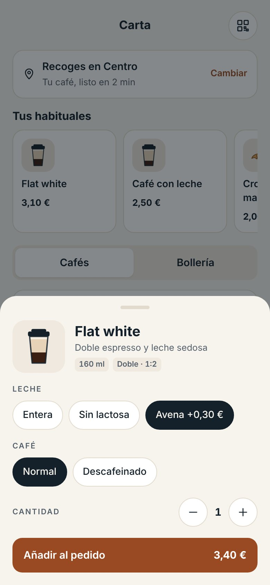
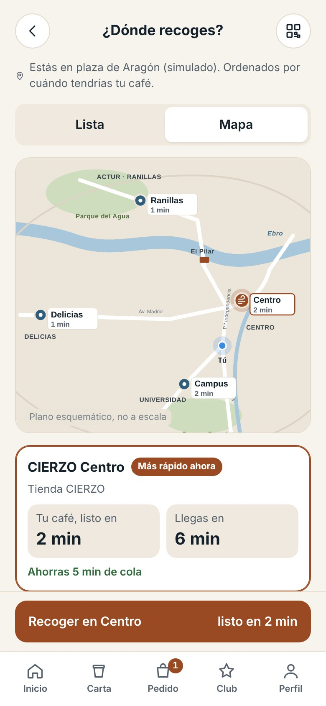
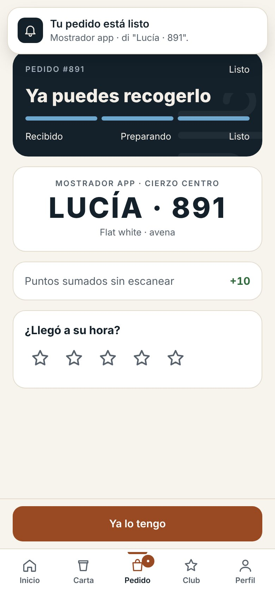

Prototipo funcional
Probar la app ↗
La app de la fase 1.
Cada pantalla resuelve un paso del embudo, desde el registro con 20 % de bienvenida hasta el aviso de “tu pedido está listo”.
Desliza → · clic para ampliar







20 %
en el primer pedido, solo pagando en la app
10 pts
por café y 5 por bollería; 100 puntos, café gratis
2 niveles
Brisa y Cierzo, con catas y ediciones exóticas
4 puntos
de recogida en Zaragoza: tienda y partners